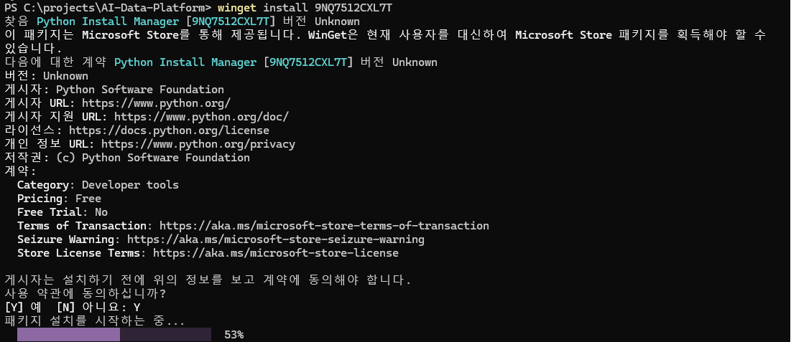
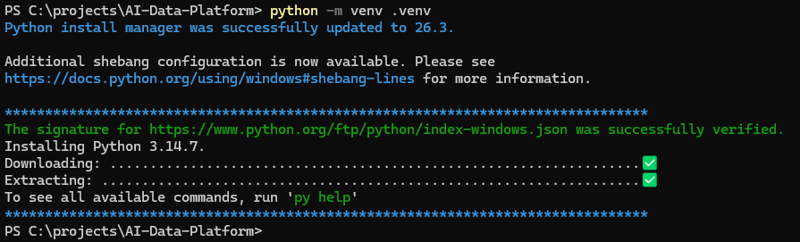
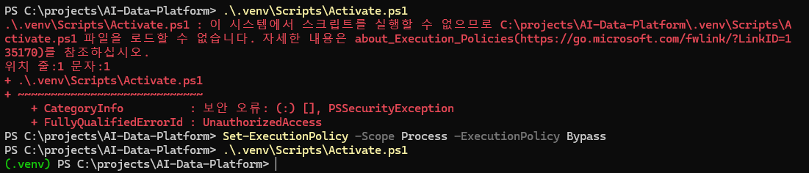

Python 설치 및 환경 설정 가이드 - Windows
AI-Data-Platform 프로젝트를 Windows PC에서 사용하기 위해 Python을 설치하고, 버전을 확인한 뒤, 프로젝트 전용 가상환경(.venv)과 pip 환경을 구성하는 가이드
1. 문서 작성 목적
이 문서는 Windows 환경에서 AI-Data-Platform 프로젝트를 처음 시작하거나, 새로운 PC에서 개발 환경을 다시 구성하는 사용자를 대상으로 Python 설치와 기본 환경 설정 방법을 설명한다.
AI-Data-Platform 프로젝트의 RAG, Local LLM 연계, AI Agent 등 여러 실습은 Python을 기반으로 작성되어 있다.
따라서 프로젝트 실습을 진행하려면 다음 환경이 필요하다.
Python 설치
↓
Python 실행 확인
↓
pip 확인
↓
프로젝트 가상환경(.venv) 생성
↓
가상환경 활성화
↓
pip 업데이트
↓
프로젝트별 Python 패키지 설치 준비 완료
이 문서에서는 Windows에서 Python을 설치하고 프로젝트별 Python 실행 환경을 준비하는 단계까지만 다룬다.
MkDocs, Ollama, LangChain, LangGraph, ChromaDB 등의 개별 패키지나 프로그램 설치는 해당 기능별 가이드에서 별도로 진행한다.
2. Python 환경을 별도로 구성하는 이유
Windows PC에 Python만 설치하면 Python 코드를 실행할 수는 있다.
하지만 AI-Data-Platform 프로젝트에서는 Python만 설치하고 바로 모든 라이브러리를 시스템 전체에 설치하지 않고, 프로젝트 전용 가상환경을 만들어 사용하는 방식을 권장한다.
전체 구조를 단순화하면 다음과 같다.
Windows
│
├─ Python
│
└─ AI-Data-Platform
│
├─ .venv
│ └─ 프로젝트 전용 Python 환경
│
├─ docs
├─ labs
├─ mkdocs.yml
└─ ...
가상환경을 사용하면 프로젝트별로 Python 패키지와 버전을 분리하여 관리할 수 있다.
3. Windows Python 환경 구성 전체 흐름
새로운 Windows PC에서 권장하는 구성 순서는 다음과 같다.
1. 기존 Python 설치 여부 확인
↓
2. Python 설치
↓
3. PowerShell 다시 실행
↓
4. Python 버전 확인
↓
5. pip 확인
↓
6. AI-Data-Platform 프로젝트 폴더 이동
↓
7. .venv 가상환경 생성
↓
8. PowerShell에서 가상환경 활성화
↓
9. 필요 시 PowerShell ExecutionPolicy 오류 해결
↓
10. pip 업데이트
↓
11. 최종 환경 확인
4. Python이 이미 설치되어 있는지 먼저 확인
Python을 설치하기 전에 기존 설치 여부를 먼저 확인한다.
PowerShell 또는 Windows Terminal을 실행하고 다음 명령을 입력한다.
python --version
정상적으로 설치되어 있다면 다음과 비슷한 결과가 출력된다.
Python 3.14.x
Python Install Manager가 설치된 환경에서는 다음 명령도 사용할 수 있다.
py --version
환경에 따라 python 또는 py 명령의 동작이 다를 수 있으므로, 프로젝트에서는 우선 다음 명령을 기준으로 확인한다.
python --version
Python이 정상적으로 설치된 경우
Python 버전이 정상적으로 출력되면 다시 설치하지 않아도 된다.
다음 단계인 pip 확인으로 이동한다.
Python을 찾을 수 없는 경우
다음과 비슷한 메시지가 나타나면 Python이 설치되어 있지 않거나 명령 경로가 정상적으로 연결되지 않은 상태일 수 있다.
python : 'python'이라는 용어가 cmdlet, 함수, 스크립트 파일 또는
실행할 수 있는 프로그램 이름으로 인식되지 않습니다.
이 경우 Python을 설치한다.
5. Windows의 Python 설치 방식
현재 Windows용 Python은 Python Install Manager를 중심으로 설치 및 버전 관리를 할 수 있다.
Python 공식 문서에서는 Python Install Manager를 Microsoft Store에서 설치하거나 Python 공식 다운로드 페이지에서 설치할 수 있다고 안내한다.
설치 방식은 크게 다음과 같이 생각하면 된다.
방법 1. Microsoft Store에서 Python Install Manager 설치
방법 2. python.org에서 Python Install Manager 설치
방법 3. 기존 방식의 Python Windows Installer 사용
AI-Data-Platform 프로젝트에서는 Python 공식 배포 방식을 사용하는 것을 권장한다.
6. 방법 1 - Microsoft Store에서 Python Install Manager 설치
Windows에서 가장 간단한 방법 중 하나는 Microsoft Store에서 Python Install Manager를 설치하는 것이다.
설치 흐름은 다음과 같다.
Microsoft Store 실행
↓
Python Install Manager 검색
↓
설치
↓
PowerShell 다시 실행
↓
Python 설치 또는 실행 확인
WinGet을 사용할 수 있는 환경에서는 다음 명령으로 Python Install Manager를 설치할 수도 있다.
winget install 9NQ7512CXL7T
여기서 9NQ7512CXL7T는 Microsoft Store의 Python Install Manager를 식별하는 Store ID이다.

설치 명령이나 Store ID는 Python 공식 배포 정책에 따라 변경될 수 있으므로, 실제 설치 시점에는 Python 공식 Windows 문서를 함께 확인하는 것이 좋다.
7. 방법 2 - python.org에서 설치
Microsoft Store를 사용하지 않는 경우 Python 공식 사이트의 Windows 다운로드 페이지에서 Python Install Manager 또는 Windows용 설치 파일을 내려받을 수 있다.
권장 흐름은 다음과 같다.
Python 공식 Windows 다운로드 페이지 접속
↓
Python Install Manager 또는 Windows용 설치 파일 선택
↓
설치 프로그램 실행
↓
설치 완료
↓
PowerShell 다시 실행
↓
python --version 확인
조직 또는 회사 PC에서 Microsoft Store 사용이 제한된 경우 이 방식을 사용할 수 있다.
8. Python 버전 선택
AI-Data-Platform 프로젝트에서는 프로젝트에서 사용하는 Python 버전을 가능한 한 맞추는 것이 좋다.
예를 들어 팀에서 Python 3.14 계열을 기준으로 실습하고 있다면 Windows PC에서도 동일한 계열을 사용하는 것이 환경 차이를 줄이는 데 도움이 된다.
다만 다음 사항을 주의한다.
최신 Python 버전이라고 해서
모든 AI / ML 라이브러리가 즉시 호환되는 것은 아니다.
특히 다음 라이브러리는 Python 최신 버전 지원 시점이 다를 수 있다.
PyTorch
sentence-transformers
ChromaDB
LangChain 관련 패키지
각종 문서 처리 라이브러리
따라서 프로젝트에서 requirements.txt, pyproject.toml 또는 별도의 Python 버전 정책이 있다면 프로젝트 기준 버전을 우선한다.
9. 설치 후 PowerShell을 다시 실행해야 하는 이유
Python 설치가 완료된 후 기존에 열려 있던 PowerShell에서 바로 다음 명령을 실행했을 때 Python이 인식되지 않는 경우가 있다.
python --version
설치 과정에서 Windows의 실행 경로나 앱 연결 정보가 변경되었지만, 이미 실행 중인 PowerShell 세션에는 변경사항이 즉시 반영되지 않을 수 있기 때문이다.
따라서 설치가 끝난 후에는 다음 순서를 권장한다.
1. 현재 PowerShell 종료
2. PowerShell 또는 Windows Terminal 다시 실행
3. python --version 실행
4. pip 확인
10. Python 설치 확인
새 PowerShell을 열고 다음 명령을 실행한다.
python --version
정상 예:
Python 3.14.x
Python 실행 파일의 위치를 확인하고 싶다면 다음 명령을 사용할 수 있다.
where python
여러 Python이 설치되어 있다면 여러 경로가 출력될 수도 있다.
이 경우 실제 프로젝트에서 어떤 Python이 실행되는지 확인하는 것이 중요하다.
11. Python Install Manager 관련 명령 확인
Python Install Manager를 사용하는 환경에서는 다음과 같은 명령을 사용할 수 있다.
py --version
또는 설치 관리자 자체를 명확하게 지정해야 하는 경우 다음 명령을 사용할 수 있다.
pymanager --version
다만 AI-Data-Platform 프로젝트 실습에서는 복잡성을 줄이기 위해 기본적으로 다음 명령을 중심으로 사용한다.
python
python -m pip
python -m venv
이 방식은 현재 실행 중인 Python과 연결된 pip 또는 venv를 명확하게 사용한다는 장점이 있다.
12. pip란?
pip는 Python 패키지를 설치하고 관리하는 도구이다.
예를 들어 다음과 같은 Python 라이브러리를 설치할 때 사용한다.
requests
pypdf
python-docx
openpyxl
chromadb
langchain
langgraph
일반적으로 Python 설치 환경에 pip가 함께 제공된다.
13. pip 설치 여부 확인
다음 명령으로 pip를 확인한다.
python -m pip --version
정상적으로 설치되어 있다면 다음과 비슷한 결과가 출력된다.
pip 26.x from ...\site-packages\pip (python 3.14)
왜 pip --version보다 python -m pip --version을 권장하는가?
단순히 다음 명령을 사용할 수도 있다.
pip --version
하지만 PC에 여러 Python이 설치되어 있다면 pip 명령이 어떤 Python과 연결되어 있는지 혼동할 수 있다.
반면 다음 명령은:
python -m pip
현재 python 명령으로 실행되는 Python 인터프리터의 pip를 사용한다.
따라서 프로젝트 문서에서는 가능하면 다음 형식을 사용하는 것을 권장한다.
python -m pip <명령>
14. 프로젝트 디렉터리로 이동
Python 설치를 확인했다면 AI-Data-Platform 프로젝트 루트 디렉터리로 이동한다.
예를 들어 프로젝트가 다음 위치에 있다면:
C:\projects\AI-Data-Platform
PowerShell에서 다음 명령을 실행한다.
cd C:\projects\AI-Data-Platform
현재 위치를 확인할 수 있다.
pwd
또는 파일 목록을 확인한다.
dir
프로젝트 루트에는 일반적으로 다음과 같은 파일과 디렉터리가 있다.
AI-Data-Platform
│
├─ docs
├─ labs
├─ mkdocs.yml
├─ README.md
└─ ...
15. Python 가상환경이란?
Python 가상환경(Virtual Environment)은 특정 프로젝트에서 사용하는 Python 패키지를 별도의 공간에 분리하여 관리하기 위한 환경이다.
AI-Data-Platform 프로젝트에서는 .venv라는 이름으로 가상환경을 생성하는 것을 권장한다.
AI-Data-Platform
│
├─ .venv
│ ├─ Scripts
│ ├─ Lib
│ └─ ...
│
├─ docs
├─ labs
└─ ...
가상환경을 사용하면 다음과 같은 장점이 있다.
1. 프로젝트마다 서로 다른 패키지 버전을 사용할 수 있다.
2. 다른 Python 프로젝트와 라이브러리 충돌을 줄일 수 있다.
3. Windows 시스템 Python 환경을 불필요하게 변경하지 않는다.
4. 프로젝트를 새 PC에서 다시 구성하기 쉽다.
5. 문제가 발생했을 때 .venv를 삭제하고 다시 만들 수 있다.
16. .venv라는 이름을 사용하는 이유
가상환경 디렉터리 이름은 반드시 .venv여야 하는 것은 아니다.
다음과 같은 이름도 사용할 수 있다.
venv
env
myenv
하지만 프로젝트에서는 다음과 같이 .venv를 사용하는 것을 권장한다.
.venv
이유는 다음과 같다.
프로젝트 가상환경임을 쉽게 알 수 있음
IDE에서 자동으로 인식하기 쉬움
Git 저장소에서 제외하기 쉬움
팀원 간 동일한 명명 규칙 사용 가능
17. Windows와 macOS의 .venv는 서로 다르다
가상환경은 운영체제와 Python 설치 환경에 의존한다.
따라서 macOS에서 생성한 .venv를 Windows PC에서 그대로 복사해서 사용하면 안 된다.
예를 들어 내부 구조부터 다르다.
Windows:
.venv/
└─ Scripts/
macOS:
.venv/
└─ bin/
따라서 새로운 PC나 다른 운영체제에서 프로젝트를 Clone한 경우에는 해당 PC에서 .venv를 새로 생성한다.
18. 가상환경 생성
프로젝트 루트에서 다음 명령을 실행한다.
python -m venv .venv

명령을 분해하면 다음과 같다.
python
→ Python 실행
-m
→ Python 모듈을 실행
venv
→ Python 표준 가상환경 모듈
.venv
→ 생성할 가상환경 디렉터리 이름
즉 다음 명령은:
python -m venv .venv
현재 Python을 이용하여 .venv라는 가상환경을 생성한다는 의미이다.
19. 가상환경 생성 확인
명령 실행 후 프로젝트 디렉터리를 확인한다.
dir
다음과 같이 .venv가 생성되어 있으면 정상이다.
AI-Data-Platform
│
├─ .venv
├─ docs
├─ labs
├─ mkdocs.yml
└─ ...
Windows의 .venv 내부에는 일반적으로 다음 구조가 생성된다.
.venv
│
├─ Include
├─ Lib
├─ Scripts
└─ pyvenv.cfg
가상환경 실행과 관련된 주요 파일은 Scripts 디렉터리에 있다.
20. PowerShell에서 가상환경 활성화
PowerShell에서는 다음 명령으로 가상환경을 활성화한다.
.\.venv\Scripts\Activate.ps1
PowerShell의 실행 정책에 따라 Activate.ps1 실행 시 PSSecurityException 또는 UnauthorizedAccess 오류가 발생할 수 있다.
이 경우 다음 명령을 최초 1회만 실행하여 현재 사용자에 대한 PowerShell 스크립트 실행 권한을 설정한다.
Set-ExecutionPolicy -Scope CurrentUser -ExecutionPolicy RemoteSigned
설정 후 다시 가상환경 활성화 명령을 실행한다.
.\.venv\Scripts\Activate.ps1
Set-ExecutionPolicy명령은 최초 1회만 설정하면 된다.
이후에는 PowerShell을 새로 실행할 때마다 가상환경 활성화 명령만 실행하면 된다.

성공하면 PowerShell 프롬프트 앞에 일반적으로 다음과 같이 가상환경 이름이 표시된다.
(.venv) PS C:\projects\AI-Data-Platform>
앞의:
(.venv)
는 현재 PowerShell이 .venv 가상환경을 사용하고 있다는 의미이다.
21. 가상환경 활성화가 의미하는 것
가상환경을 활성화하면 현재 PowerShell 세션에서 python과 pip 명령이 프로젝트의 .venv 안에 있는 Python 환경을 우선 사용하도록 설정된다.
개념적으로 다음과 같다.
가상환경 활성화 전
python
↓
Windows에 설치된 기본 Python
가상환경 활성화 후
python
↓
AI-Data-Platform\.venv\Scripts\python.exe
이를 통해 프로젝트에서 설치하는 패키지가 시스템 전체가 아닌 .venv에 설치된다.
22. 실제 사용 중인 Python 확인
가상환경 활성화 후 다음 명령을 실행한다.
where python
가상환경이 정상적으로 활성화되었다면 프로젝트 .venv의 Python 경로가 우선적으로 표시되어야 한다.
예:
C:\projects\AI-Data-Platform\.venv\Scripts\python.exe
Python 자체에서도 다음 명령으로 실행 파일 위치를 확인할 수 있다.
python -c "import sys; print(sys.executable)"
예:
C:\projects\AI-Data-Platform\.venv\Scripts\python.exe
이 확인 방법은 여러 Python이 설치된 PC에서 특히 유용하다.
23. PowerShell ExecutionPolicy 오류
Windows PowerShell에서 가상환경을 처음 활성화할 때 다음과 비슷한 오류가 발생할 수 있다.
Activate.ps1 파일을 로드할 수 없습니다.
이 시스템에서 스크립트를 실행할 수 없으므로
...\Activate.ps1 파일을 로드할 수 없습니다.
PSSecurityException
UnauthorizedAccess
이 오류는 .venv가 잘못 생성된 것이 아니다.
PowerShell의 스크립트 실행 정책(Execution Policy) 때문에 Activate.ps1 실행이 차단된 것이다.
24. 현재 PowerShell에서만 임시로 실행 허용하기
프로젝트 실습에서는 시스템 전체 정책을 바로 변경하기보다, 필요한 경우 현재 PowerShell 프로세스에서만 임시로 허용하는 방법을 사용할 수 있다.
다음 명령을 실행한다.
Set-ExecutionPolicy -Scope Process -ExecutionPolicy Bypass
그 다음 다시 가상환경을 활성화한다.
.\.venv\Scripts\Activate.ps1
정상적으로 활성화되면 다음과 같이 표시된다.
(.venv) PS C:\projects\AI-Data-Platform>
-Scope Process를 사용하는 이유
Process 범위는 현재 실행 중인 PowerShell 프로세스에만 적용된다.
PowerShell 실행
↓
ExecutionPolicy 임시 변경
↓
가상환경 사용
↓
PowerShell 종료
↓
임시 설정 종료
즉 PowerShell 창을 닫으면 해당 설정은 유지되지 않는다.
초기 실습 환경에서는 시스템 전체 설정을 변경하는 것보다 영향 범위가 작다는 장점이 있다.
25. Python 공식 문서에서 안내하는 다른 방식
Python의 venv 공식 문서에서는 Windows PowerShell에서 Activate.ps1 실행이 차단되는 경우 사용자 범위의 실행 정책을 변경하는 방법도 안내한다.
예:
Set-ExecutionPolicy -ExecutionPolicy RemoteSigned -Scope CurrentUser
이 방식은 현재 Windows 사용자 계정에 설정이 유지된다.
두 방식의 차이는 다음과 같다.
| 방식 | 적용 범위 | 지속 여부 |
|---|---|---|
Process + Bypass |
현재 PowerShell 프로세스 | PowerShell 종료 시 해제 |
CurrentUser + RemoteSigned |
현재 Windows 사용자 | 설정 유지 |
AI-Data-Platform의 초기 환경 구성에서는 일단 Process 범위의 임시 설정으로 문제를 해결하고, 회사 보안정책이나 개인 개발환경 정책에 따라 지속적인 설정이 필요한 경우 CurrentUser 방식을 검토하는 것을 권장한다.
회사에서 관리하는 PC는 보안 정책에 의해 ExecutionPolicy 변경 자체가 제한될 수 있다.
이 경우 임의로 정책을 우회하지 말고 조직의 보안 정책 또는 시스템 관리자 지침을 따른다.
26. CMD에서 가상환경을 활성화하는 방법
PowerShell이 아닌 Windows 명령 프롬프트(CMD)를 사용하는 경우 활성화 명령이 다르다.
.venv\Scripts\activate.bat
정상적으로 활성화되면 다음과 같이 표시될 수 있다.
(.venv) C:\projects\AI-Data-Platform>
프로젝트 가이드에서는 Windows PowerShell을 기준으로 설명하지만, 필요에 따라 CMD를 사용할 수도 있다.
27. 가상환경은 반드시 활성화해야 하는가?
Python 가상환경은 활성화하지 않아도 해당 가상환경의 Python 실행 파일을 직접 지정하면 사용할 수 있다.
예:
.\.venv\Scripts\python.exe --version
하지만 매번 전체 경로를 입력해야 하므로 일반적인 개발과 실습에서는 가상환경을 활성화하여 사용하는 것이 편리하다.
.\.venv\Scripts\Activate.ps1
28. 가상환경에서 pip 확인
가상환경을 활성화한 상태에서 다음 명령을 실행한다.
python -m pip --version
결과 경로에 .venv가 포함되어 있는지 확인한다.
예:
pip 26.x from C:\projects\AI-Data-Platform\.venv\Lib\site-packages\pip
이 결과는 현재 pip가 시스템 전체가 아니라 AI-Data-Platform의 .venv 안에서 실행되고 있다는 의미이다.
29. pip 업데이트
가상환경을 처음 만든 뒤 pip를 최신 상태로 업데이트할 수 있다.
python -m pip install --upgrade pip
이미 최신 버전인 경우 다음과 비슷한 메시지가 출력될 수 있다.
Requirement already satisfied: pip in .\.venv\Lib\site-packages (...)
이 메시지는 오류가 아니다.
현재 .venv에 설치된 pip가 이미 요구 조건을 만족한다는 의미이다.
30. 프로젝트 패키지는 가상환경 활성화 후 설치한다
이후 MkDocs 또는 AI 실습용 Python 패키지를 설치할 때는 가능하면 .venv가 활성화된 상태에서 설치한다.
예:
(.venv) PS C:\projects\AI-Data-Platform>
이 상태에서:
python -m pip install <패키지명>
또는 프로젝트에 requirements.txt가 있는 경우:
python -m pip install -r requirements.txt
를 사용한다.
이 문서에서는 특정 AI 라이브러리 설치까지 진행하지 않는다.
패키지 설치 내용은 MkDocs, RAG, Agent 등 각 실습 가이드에서 필요한 시점에 다룬다.
31. requirements.txt의 역할
Python 프로젝트에서는 필요한 라이브러리와 버전을 requirements.txt 같은 파일로 관리할 수 있다.
예를 들어:
requests
pypdf
openpyxl
와 같은 패키지 목록이 있을 수 있다.
다음 명령으로 한 번에 설치할 수 있다.
python -m pip install -r requirements.txt
하지만 AI-Data-Platform 전체 프로젝트에 하나의 공통 requirements.txt가 반드시 존재한다고 가정해서는 안 된다.
실습 영역마다 별도 requirements.txt를 사용할 수도 있으므로 해당 실습 가이드의 안내를 우선한다.
32. .venv는 Git에 올리지 않는다
.venv에는 Python 실행 파일과 설치된 라이브러리가 들어 있기 때문에 용량이 크고 운영체제에 종속적이다.
따라서 GitHub Repository에 .venv 자체를 올리지 않는 것이 일반적인 원칙이다.
.gitignore에 다음 항목이 포함되어 있는지 확인한다.
.venv/
venv/
프로젝트를 다른 PC에서 Clone한 사용자는 .venv를 내려받는 것이 아니라 자신의 PC에서 다시 생성한다.
python -m venv .venv
33. 새 PC에서 환경을 다시 만드는 원리
프로젝트를 GitHub에 올릴 때는 .venv 자체보다 소스 코드와 패키지 정의 파일을 관리한다.
개념적으로 다음과 같다.
GitHub Repository
소스 코드
requirements.txt
설정 파일
문서
↓
새 PC에서 Clone
↓
Python 설치
↓
.venv 새로 생성
↓
필요 패키지 다시 설치
따라서 Windows에서 만든 .venv를 macOS로 복사하거나, 다른 Windows PC에 그대로 복제하는 방식은 권장하지 않는다.
34. 가상환경 비활성화
가상환경 사용을 종료하려면 다음 명령을 실행한다.
deactivate
프롬프트 앞의 (.venv) 표시가 사라진다.
예:
PS C:\projects\AI-Data-Platform>
가상환경 디렉터리가 삭제되는 것은 아니다.
단지 현재 PowerShell에서 가상환경 사용을 종료한 것이다.
35. PowerShell을 다시 열었을 때
PowerShell을 종료하면 가상환경 활성화 상태도 종료된다.
다음에 다시 프로젝트 작업을 시작할 때는 프로젝트 디렉터리로 이동한 후 다시 활성화한다.
cd C:\projects\AI-Data-Platform
.\.venv\Scripts\Activate.ps1
만약 다시 ExecutionPolicy 오류가 발생하고 Process 범위의 임시 방식을 사용하고 있다면 다음 명령을 먼저 실행한다.
Set-ExecutionPolicy -Scope Process -ExecutionPolicy Bypass
그 다음 다시 활성화한다.
.\.venv\Scripts\Activate.ps1
36. .venv를 다시 만들어야 하는 경우
다음과 같은 경우 .venv를 삭제하고 새로 구성하는 것이 문제 해결에 도움이 될 수 있다.
Python 버전을 크게 변경한 경우
가상환경 내부 패키지가 심하게 충돌한 경우
macOS에서 사용하던 프로젝트를 Windows에서 새로 구성한 경우
다른 PC에서 프로젝트를 Clone한 경우
가상환경 자체가 손상된 경우
가상환경 안에 중요한 소스 코드를 저장하지 않았다면 .venv는 다시 생성할 수 있는 환경이다.
삭제 후:
python -m venv .venv
로 다시 생성한다.
37. 여러 Python이 설치된 경우
Windows PC에는 여러 Python 버전이 동시에 설치될 수 있다.
이 경우 프로젝트의 .venv를 만들기 전에 현재 python 명령이 어느 버전을 가리키는지 확인한다.
python --version
where python
Python Install Manager를 사용하는 경우 설치된 런타임을 관리하는 기능도 사용할 수 있다.
특정 Python 버전을 프로젝트에서 요구한다면 그 버전을 선택하여 .venv를 생성해야 한다.
가상환경 생성 후에는 다음 명령으로 다시 확인한다.
python --version
python -c "import sys; print(sys.executable)"
38. 자주 발생하는 문제
38.1 python 명령을 찾을 수 없음
확인 순서:
1. Python 설치 여부 확인
2. PowerShell 종료 후 다시 실행
3. python --version 재확인
4. py --version 확인
5. Python 공식 설치 관리자 상태 확인
38.2 Python을 설치했는데 Microsoft Store가 열림
Windows의 App Execution Alias 설정이나 기존 Python 연결 상태 때문에 python 명령 실행 시 Microsoft Store가 열리는 경우가 있을 수 있다.
이 경우 다음을 확인한다.
Python Install Manager 또는 Python 설치가 정상 완료되었는가?
PowerShell을 다시 실행했는가?
where python 결과가 어떻게 나오는가?
py 명령은 정상 동작하는가?
무작정 여러 Python을 추가 설치하기보다 현재 설치 상태를 먼저 확인한다.
38.3 pip 명령을 찾을 수 없음
다음 명령을 사용한다.
python -m pip --version
이 방식이 정상 동작하면 별도의 pip 명령이 PATH에 없어도 현재 Python의 pip를 사용할 수 있다.
38.4 .venv 생성이 되지 않음
다음을 먼저 확인한다.
python --version
Python 자체가 정상적으로 실행되는지 확인한 후 다시 생성한다.
python -m venv .venv
38.5 Activate.ps1 실행이 차단됨
증상:
PSSecurityException
UnauthorizedAccess
스크립트를 실행할 수 없습니다.
현재 PowerShell에서만 임시로 허용하려면:
Set-ExecutionPolicy -Scope Process -ExecutionPolicy Bypass
그 다음:
.\.venv\Scripts\Activate.ps1
을 실행한다.
38.6 가상환경을 활성화했는데 시스템 Python이 실행되는 것 같음
다음 명령으로 확인한다.
where python
또는:
python -c "import sys; print(sys.executable)"
정상이라면 프로젝트의 .venv\Scripts\python.exe가 사용되어야 한다.
38.7 pip install 후 다른 Python에서 패키지를 찾지 못함
여러 Python과 pip가 섞여 있을 가능성이 있다.
가상환경을 활성화하고 다음 방식으로 설치한다.
python -m pip install <패키지명>
그리고 다음 명령으로 현재 Python을 확인한다.
python -c "import sys; print(sys.executable)"
39. 최종 환경 확인
환경 구성이 끝나면 다음 명령을 순서대로 실행한다.
39.1 Python 버전
python --version
39.2 Python 실행 위치
python -c "import sys; print(sys.executable)"
가상환경이 활성화된 경우 .venv\Scripts\python.exe 경로가 출력되어야 한다.
39.3 pip 버전
python -m pip --version
출력 경로에 .venv가 포함되어 있는지 확인한다.
39.4 가상환경 표시
PowerShell 프롬프트 앞에 다음 표시가 있는지 확인한다.
(.venv)
예:
(.venv) PS C:\projects\AI-Data-Platform>
40. 완료 체크리스트
Windows Python 개발 환경 구성이 완료되었는지 확인한다.
[완료] Python 설치
[완료] python --version 정상 출력
[완료] python -m pip --version 정상 출력
[완료] AI-Data-Platform 프로젝트 루트 확인
[완료] .venv 가상환경 생성
[완료] PowerShell에서 .venv 활성화
[완료] 필요 시 ExecutionPolicy 오류 해결
[완료] 가상환경 Python 경로 확인
[완료] pip 업데이트
[완료] .venv가 Git 관리 대상에서 제외되어 있는지 확인
위 항목이 모두 정상이라면 Windows에서 AI-Data-Platform 프로젝트의 Python 기반 실습을 진행할 기본 환경이 준비된 것이다.
41. 다음 단계
Windows 로컬 환경 구성의 전체 흐름에서 현재 위치는 다음과 같다.
로컬 환경(Windows) 세팅하기
1. Git 설치 및 기본 설정
↓
2. Python 설치 및 환경 설정
↓
3. 프로젝트 참여 및 소스 받기
↓
4. 필요한 기능별 환경 구성
프로젝트 Repository를 이미 Clone한 상태에서 이 문서를 진행했다면 다음 단계는 목적에 따라 달라진다.
MkDocs 문서 관리
→ MkDocs 관련 패키지 설치 및 mkdocs serve
RAG 실습
→ 해당 requirements.txt 설치
Local LLM
→ Ollama / Open WebUI 환경 구성
AI Agent
→ LangChain / LangGraph 등 필요한 패키지 구성
기본 Python 환경과 기능별 패키지 설치를 분리하여 관리하면 환경 구성이 복잡해지는 것을 줄일 수 있다.
42. 핵심 정리
Windows에서 AI-Data-Platform 프로젝트를 위한 Python 환경 구성의 핵심은 다음과 같다.
1. Python 설치 여부를 먼저 확인한다.
2. 필요하면 Python 공식 Install Manager를 이용해 설치한다.
3. python --version으로 정상 설치 여부를 확인한다.
4. python -m pip 방식으로 pip를 확인한다.
5. 프로젝트 루트에 .venv 가상환경을 생성한다.
6. PowerShell에서 Activate.ps1로 가상환경을 활성화한다.
7. ExecutionPolicy 오류가 발생할 수 있다는 점을 알아둔다.
8. 프로젝트 실습 패키지는 활성화된 .venv 안에 설치한다.
9. .venv 자체는 GitHub에 올리지 않는다.
10. 새 PC에서는 .venv를 새로 생성한다.
이 문서까지 완료하면 Windows PC에서 Python을 실행하고 AI-Data-Platform 프로젝트별 Python 패키지를 독립적으로 설치할 수 있는 기본 개발 환경이 준비된 상태이다.
43. 참고 기준
이 문서는 다음 Python 공식 문서의 현재 Windows 환경 구성을 기준으로 작성하였다.
Python 공식 문서
- Using Python on Windows
- Python Install Manager
- venv - Creation of virtual environments
- Installing Python Modules
Python 공식 다운로드
- Python Releases for Windows
Python 설치 방식과 명령은 Python 버전 및 Windows 환경에 따라 변경될 수 있으므로, 실제 설치 시점에는 최신 Python 공식 문서를 함께 확인하는 것을 권장한다.